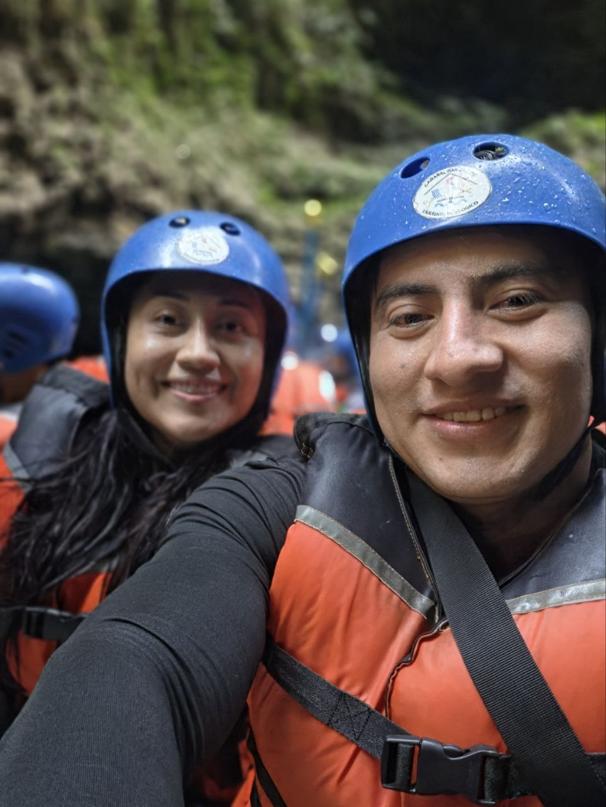
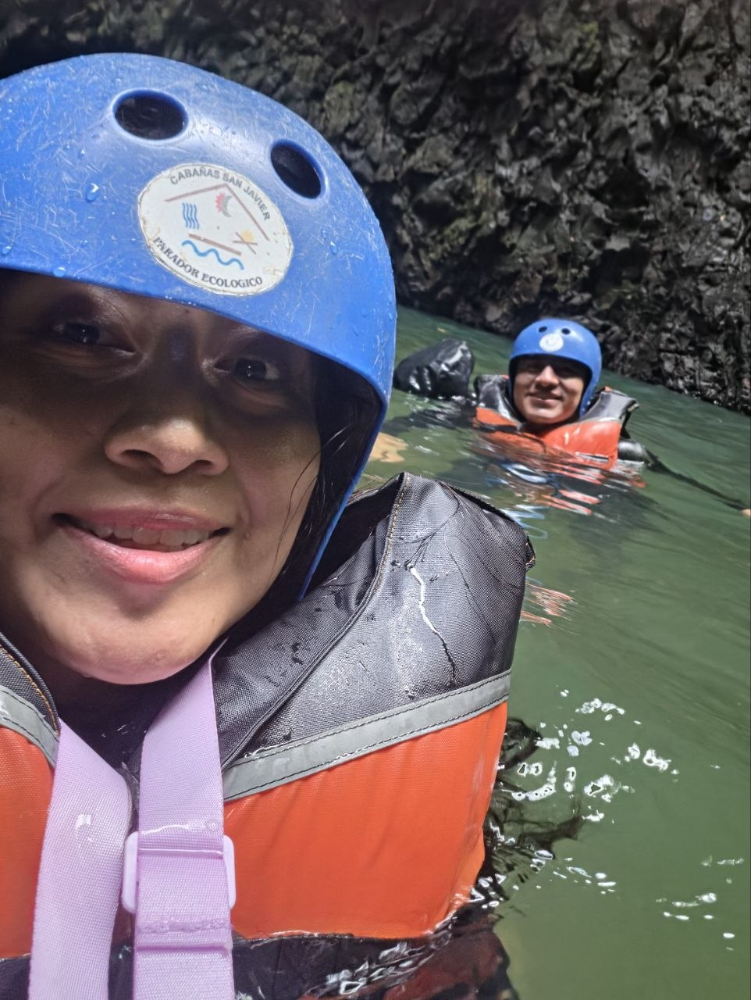
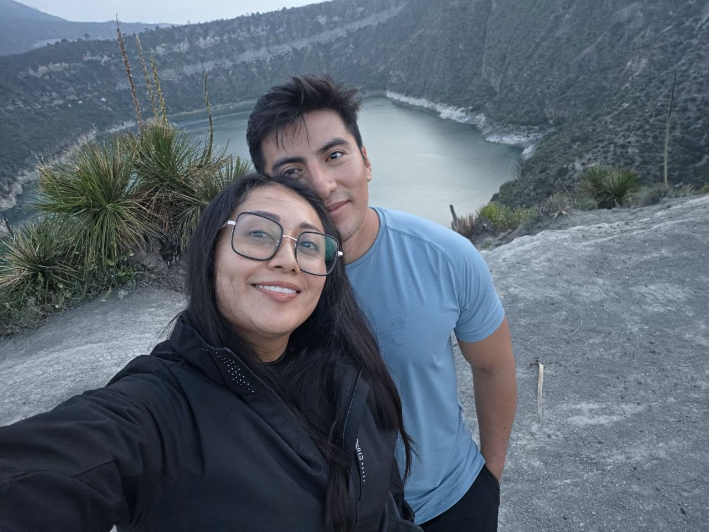
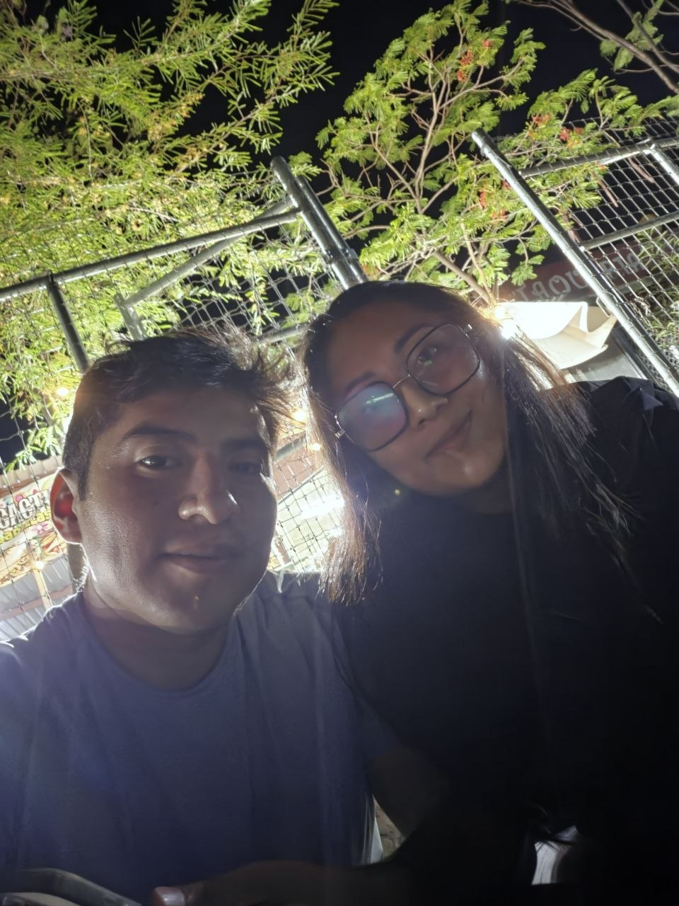
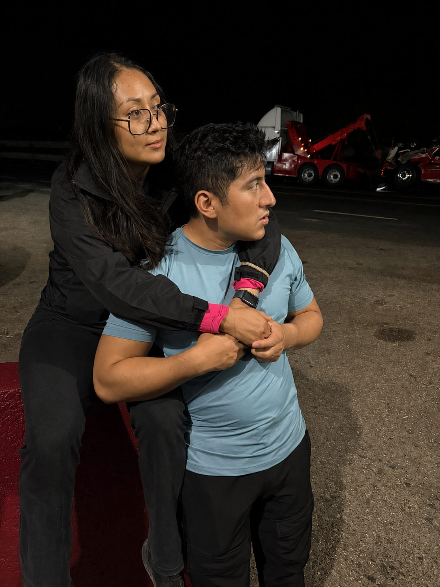

commit 0021 Date: 31 May 2026 🟡 The Way Back 🟢 Git Message feat: unexpected reunion unlocked ⚪ Story Después de varias semanas de distancia, llegó un viaje que ninguno de los dos había planeado compartir. Yo iría a Veracruz con una de mis amigas para hacer rafting en Filobobos. Tú ya me habías dicho que también irías. Incluso me preguntaste: —Espero que no te incomode si voy. Y te respondí que, si querías ir, fueras. Tú y yo seguíamos siendo amigos como siempre. Solo que ya no éramos lo que habíamos sido. Cuando llegamos vi que éramos varias personas y que viajaríamos en dos Suburban. Yo ya sabía qué asiento habías elegido porque me lo habías dicho, así que pensé que probablemente viajaríamos separados. Pero al final terminamos en la misma Suburban. Mi asiento era el 9. Y tú estabas a mi lado. Después de todo lo que había pasado, compartir aquel espacio se sentía extraño. Habíamos hecho viajes juntos. Habíamos compartido días completos. Puebla. Apoala. Punta Zicatela. Salidas. Comidas. Fotografías. Y ahora estábamos sentados uno junto al otro, después de haber pasado semanas tomando distancia. Al llegar fuimos a desayunar. Yo me senté con mi amiga y otro amigo. Tú estabas por otro lado. Aunque ya nos habíamos visto en las clases de baile, aquello se sentía diferente. Nos hablábamos por compromiso. Pero no estábamos juntos. Después del desayuno nos explicaron cómo sería el rafting, qué hacer si alguien caía al río y cómo formaríamos los equipos. Seríamos grupos de cinco o seis personas. Al final terminamos compartiendo equipo. Y fue ahí cuando algo empezó a cambiar. Comenzamos a platicar. Nos tomamos fotografías. Nos pusimos al día. Y, casi sin darnos cuenta, volvió la familiaridad. Esa sensación de estar juntos que parecía tan conocida. Durante el recorrido volvimos a abrazarnos. Nos tomamos de la mano a escondidas, procurando que nadie nos viera. Era extraño. Un poco incómodo. Un poco bonito. Pero, sobre todo, se sentía familiar. En algún momento me contaste que finalmente habías comprado tu camioneta y que ya te la habían entregado. Y después apareció una pregunta que no esperaba: —¿Por qué ya no me aparece tu foto de perfil? Te respondí: —Porque te eliminé. —Ok. Y seguimos hablando. Así de sencillo. Después de todo lo que había pasado, ahí estábamos otra vez. No porque hubiéramos planeado volver. No porque hubiéramos decidido solucionar todo. Simplemente porque la vida nos había puesto nuevamente en el mismo lugar. Y quizá, de cierta manera, también tengo que agradecerle a Arturo. Porque sin proponérselo, fue quien terminó haciendo que ese reencuentro fuera posible. Fue quien dijo: —Ven, súbete con nosotros, hacemos equipo. Quien nos llevó a seguir conviviendo, a bajar por tacos, a tomarnos una cerveza, a buscar fotos y a seguir haciendo planes durante el viaje. Fue quien, sin saber realmente todo lo que había detrás, nos fue poniendo nuevamente en el mismo lugar una y otra vez. Y quizá, si Arturo no hubiera estado ahí, ese día habría sido muy diferente. Tal vez tú y yo habríamos hablado. O tal vez no. Pero de alguna manera, entre sus ocurrencias, sus planes y sus "vamos a hacer esto", terminó ayudando a que volviéramos a encontrarnos. Y quizá, sin saberlo, Arturo fue un poquito cómplice de lo que vino después. Y quizá eso fue lo más extraño de aquel día. Que después de haber intentado tomar distancia... terminamos encontrándonos otra vez. No era como antes. Algo había cambiado. Pero tampoco éramos completamente extraños. Éramos nosotros. Una vez más. Y, por ahora, eso era suficiente. 🟣 Developer Notes Unexpected reunion detected. Previous distance: temporarily suspended. Familiarity restored. Rafting team successfully formed. Arturo: accidental catalyst detected. New chapter initialized. 🟢 Impact on Project + Reunion archived. + Shared experience resumed. + Previous chapter revisited. + Unexpected catalyst acknowledged. + New chapter initialized. 🟢 Commit Status ✔ Completed ✔ Reviewed ✔ Ready for Release
🖼 Recuerdos

1ra foto.

Aventura no planeada.
Al agua, pato. 🦆💦

Entre montañas y paisajes increíbles, volvimos a encontrarnos. ⛰️

Un viaje, un equipo y una historia que apenas volvía a comenzar.

Y poco a poco, la distancia se fue quedando atrás.

In fraganti… y sin planearlo. 😏
1 / 7
⬅ Regresar al Commit History